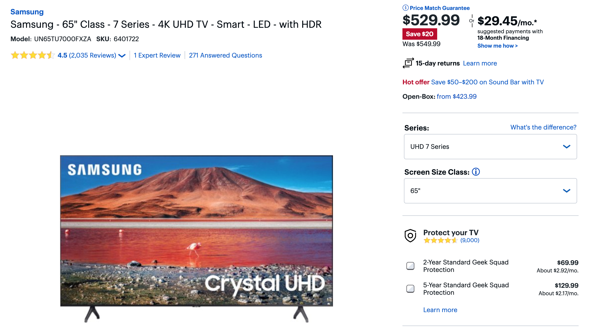
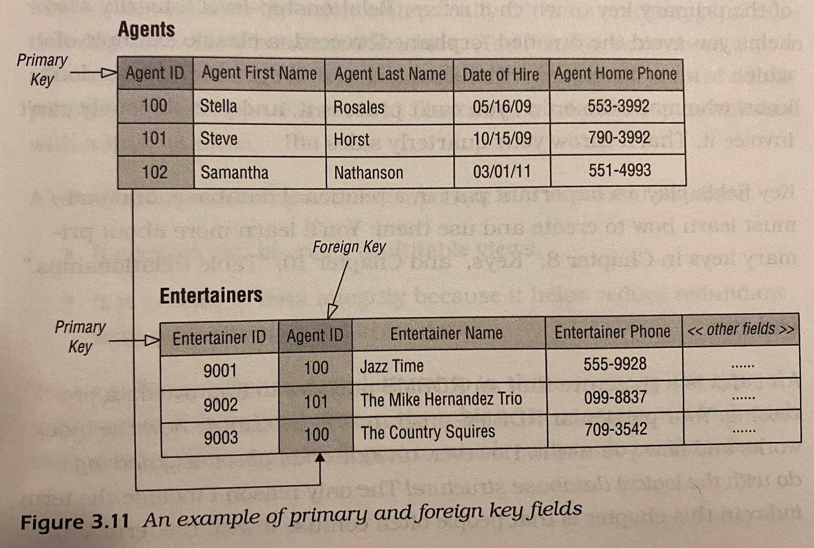

# INFO 610 Fall 2020 <div style="text-align:center;font-size: 1.5;line-height:1.8em;">Week 2.0</div> --- # Terminology - Chapter 3 --- # Value Related Terms * Data - The values you store in your database. <table width="100%"> <tr><td>12</td><td>33</td><td>899</td><td>699</td><td>23</td><td>Sept 1, 2020</td></tr> </table> * Information - Data that you process in a manner that makes it meaningful and useful to you --- # Another hint <table width="100%"> <tr><td>Samsung</td><td>UN65TU7000FXZA</td><td>899</td><td>699</td><td>23</td><td>Sept 1, 2020</td></tr> </table> --- #Information <table width="100%"> <tr><th>Manufacturer</th><th>Model</th><th>MSRP</th><th>Price</th><th>Sold</th><th>Date</th></tr> <tr><td>Samsung</td><td>UN65TU7000FXZA</td><td>899</td><td>699</td><td>23</td><td>Sept 1, 2020</td></tr> </table>  .footnote.red.bold[Data is what you store, information is what you retrieve] --- # Null A <i>null</i> represents a missing or unknown value. Null does NOT represent ZERO Null does NOT represent an empty string. Great example from the book: <hr/> QUESTION: Imagine a table for EMPLOYEES. Two columns, 'hourly_wage' and 'annual_wage'. Where would we use NULL? ??? Zero can have a wide variety of meanings. Account balances, current number of available first class tickets or current stock level of a product. Text: Zero length string can be pretty meaningless. " " (three spaces) is very different from a zero length string. A null can represent something like the state that washington DC resides in. NO state -> Null --- #Problem with Nulls Null values cause issues with 'math' ```sql 3 + null; -- null (25 * 3) + 4; -- 79 (null * 3) + 4; -- null (25 * 3) + null; -- null ``` <table width="100%"> <tr><th>Product ID</th><th>Product Description</th><th>Category</th><th>SRP</th><th>Qty On Hand</th><th>Total Value</th></tr> <tr><td>7001</td><td>Shu-Lok U-Lock</td><td>Accessories</td><td>75.00</td><td></td><td></td></tr> <tr><td>7002</td><td>SpeedRite Cyclecomputer</td><td></td><td>65.00</td><td>20</td><td>1,300.00</td></tr> <tr><td>7003</td><td>SteelHead Microshell Helmet</td><td>Accessories</td><td>36.00</td><td>33</td><td>1,118.00</td></tr> <tr><td>7004</td><td>SureStop 133-MB Brakes</td><td>Components</td><td>23.50</td><td>16</td><td>376.00</td></tr> <tr><td>7005</td><td>Diablo ATM Mountain Bike</td><td>Bikes</td><td>1,200.00</td><td></td><td></td></tr> </table> * What do you think happens to get the average of the 'Qty On Hand'? --- # Structure Related Terms * <strong>Table</strong> - In the relational model, data is stored in <i>relations</i>, which are perceived by the user as <i>tables</i>. * <strong>Tuples</strong> - Each row/record in a database is a <i>tuple</i> * <strong>Attributes</strong> - Each record has a set of values/properties stored as <i>attributes</i>. <hr/> # Table <table width="100%"> <tr><th></th><th><strong>Attribute 1</strong></th><th><strong>Attribute 2</strong></th><th><strong>Attribute 3</strong></th></tr> <tr><td><strong>Record 1</strong></td><td>val 1</td><td> val2</td><td>val3</td></tr> <tr><td><strong>Record 2</strong></td><td>val 4</td><td>val 5</td><td>val 6</td></tr> </table> --- # Primary Key * Tables are the chief structure in the database and each table always represents a single, specific <i>subject</i> * The logical order of records and fields within a table is of absolutely no importance. * Every table contains at least one 'field' - known as a primary key - that uniquely identifies each of its records. * Data can exist independant of the way it is physically stored in the computer because of the last two characteristics. Primary keys are typically an 'ID' in the database: * ClientID, PatientID, etc --- # Field * A <i>field</i> (known as an <i>attribute</i> in relational database theory) is the smallest structure in the database and it represents a characteristic of the subject of the table to which it belongs. * Fields are the structures that actually store data. * Every field in a <i>properly designed</i> database contains one and only one value and its name should be descriptive enough to identify the type of value it holds. ??? When you see fields like FirstName, LastName, City, State Zipcode, you know exactly what's in those fields --- # Types of fields * Multipart - (composite field) - which contains two or more distinct items within its value * Multivalued field - which contains multiples instances of the same type of value * Calculated field - which contains a contains a concatenated text value or the result of a mathematical expression --- # Record * Record - aka tuple, in relational theory, respresents a unique instance of the subject of a table. Book example: Each record in the 'clients' table will represent a 'client' in real life. Each record in the table has a unique primary key 'ClientID' --- # View * A <i>view</i> is a 'virtual' table composed of fields from one or more tables in the database * Relational model refers to a view as being 'virtual' because it draws data from base tables rather than storing data on its own. Three reasons views are important * Simplifies working with data across multiple tables; * Can be used to prevent certain users access to core tables * Can be used to implement data integrity. Known as a 'validation view' <img src="views.png" width="40%"/> --- <img src="views.png" width="80%"/> --- # Keys * Primary Key - field or group of fields that uniquely identify each record within a table * Can be one or more fields * Primary key <i>values</i> identify a specific record throughout the entire database/table * Primary key <i>field</i> identifies a given table throughout the entire database * Enforces table-level integrity and helps establish relationships with other tables in the database.  --- # Index * <i>Index</i> is a structure than an RDBMS provides to improve data processing. * An index has NOTHING to do with the logical database structure! * Not the same as a 'key' --- # Anyone get Docker working? --- ---